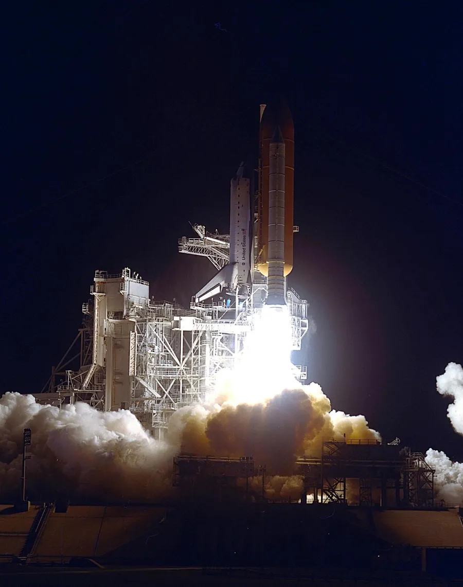

Прежде чем взлететь, посмотрим, что у нас внизу. Если разрезать Землю, как яблоко, внутри окажется несколько слоёв. Нажми на слой:
0 → 100 км · линия Кармана
Где начинается космос?
Космос начинается на линии Кармана, на высоте 100 километров. Там воздух такой редкий, что самолёт уже не может лететь, и дальше нужны ракеты.
Космос — огромное и почти пустое пространство, где находятся звёзды, планеты, луны, кометы и астероиды. Совсем пустым он не бывает: там летают отдельные атомы, излучение и пыль.
0 км
Земля: голубое небо
012 км · самолёты50 км100 км · космос
100 → 400 км · орбита
Как летают ракеты?

Старт шаттла ночью. Фото: NASA
Ракета сжигает топливо, и раскалённые газы с огромной скоростью вырываются вниз. Газы толкают ракету в обратную сторону — вверх.
Чтобы выйти на орбиту, нужно разогнаться почти до 28 000 км/ч. Большие ракеты состоят из ступеней: пустая ступень отделяется, и ракета становится легче. Шаттл был многоразовым и садился на полосу, как самолёт.
400 км · космическая станция
Как стать космонавтом
Космонавты — настоящие исследователи. Перед полётом они годами учатся и тренируются, чтобы справиться с невесомостью, перегрузками и жизнью далеко от дома.
Космонавт идёт в скафандре: покрути его
400 км и дальше · техника
Техника в космосе
400 → 384 400 км · до Луны
Первопроходцы космоса
Животные и люди, которые первыми сделали шаг туда, где никто не был.
до 5,9 млрд км · Солнечная система
Планеты
Выбери планету и покрути её мышкой или пальцем. Её освещает Солнце, поэтому одна сторона в тени, как в настоящем космосе.